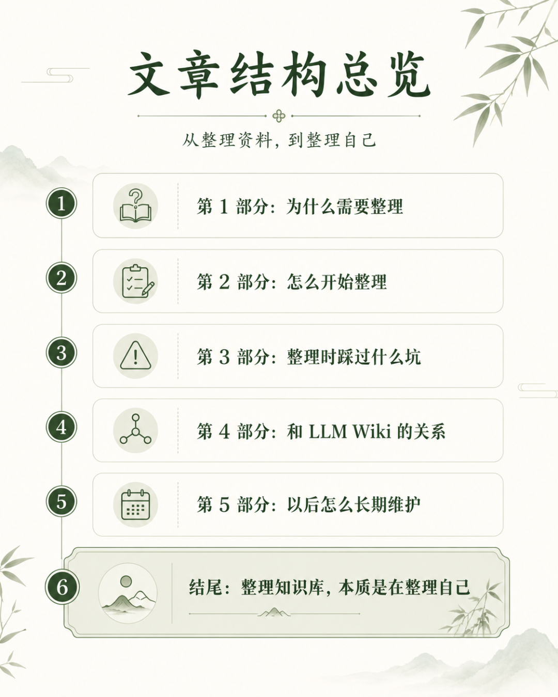
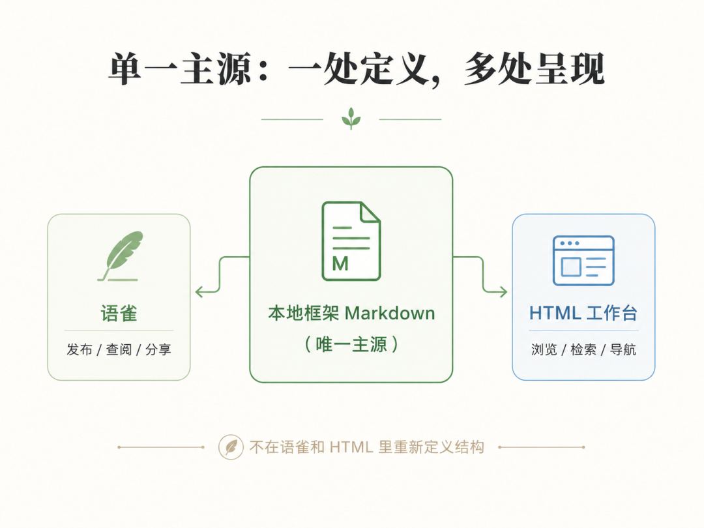
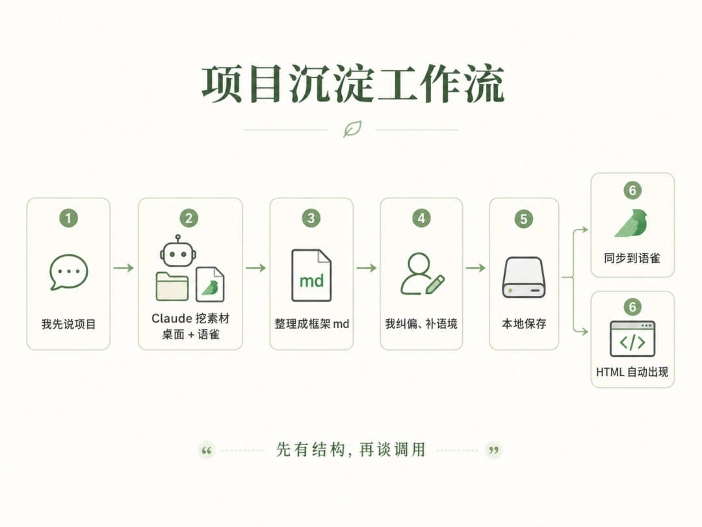
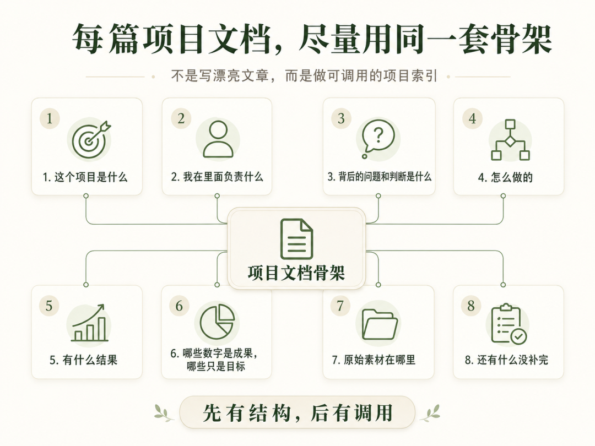
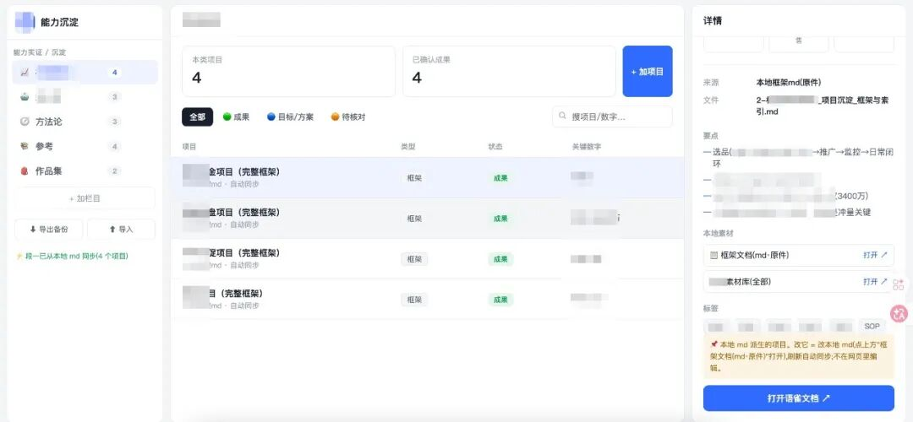
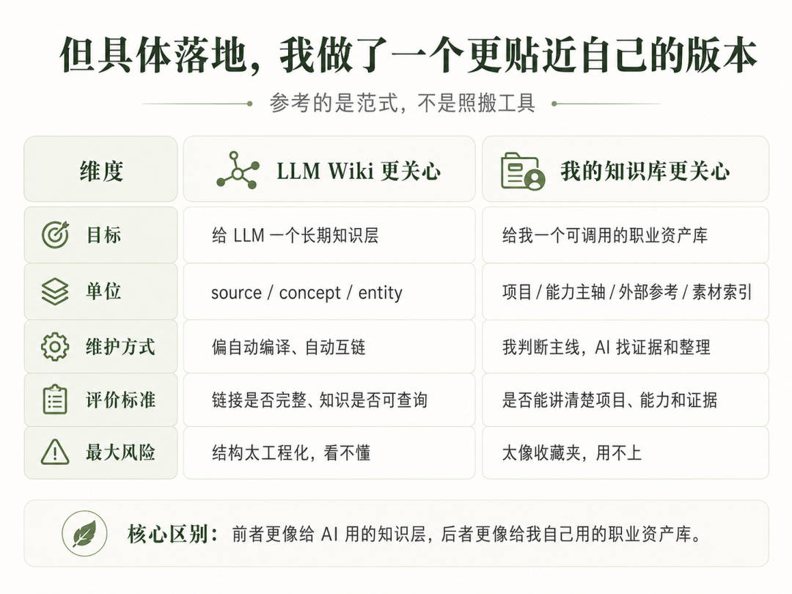

有了 Claude 之后，我最想干的一件事，是把我过去几年散落在各处的东西整理一下。
一部分在语雀，里面有会议记录、月报、项目复盘、临时想法；一部分在桌面，本地文件夹里堆着 PPT、Excel、PDF、截图、草稿；还有一些是我自己收藏的别人的产品、运营、营销、设计经验。
这些东西单看都挺有用，但放在一起就很可怕：要找的时候找不到，要讲的时候讲不清，要复盘的时候又发现同一个项目散在好几个地方。
所以我一开始的目标很朴素：不是做一个多酷的工具，而是把这些内容整顿成一个清晰可读、方便调用、真正属于我自己的知识库。
结果刚开始就遇到了问题。
1. 真正麻烦的不是文件多，而是来源太多
我原本以为，先把本地文件夹整理好就行。
后来发现不对。很多重要内容其实沉淀在语雀里：过程记录、会议讨论、项目背景、当时的判断逻辑，往往都不在桌面文件里。
但语雀也不是很好用。它适合写文档，却不适合做全局结构管理；本地文件适合喂给 AI 和做原始素材库，却不适合手机随时查。
我还想要一个更直观的工作台，像个人博客或者导航页一样，能快速看到整个知识库长什么样。
于是问题变成了三个地方怎么协同更好。
我和 Claude 讨论下来，拍板了一个关键原则：单一主源。
也就是说，真正的源头只有一个：本地的 markdown 框架文档。
语雀是发布版，HTML 是镜子。它们都不负责重新定义结构。
这点很重要。HTML 工作台说到底就是一面镜子，照的是我的桌面文件和语雀文档的结构。镜子再花哨，结构乱，照出来还是乱；结构清楚，工具自然就好用。

2. 从第一个项目开始，逐渐形成的工作流
确定单一主源之后，事情才真正顺起来。先从第一个项目入手，我和 claude基本形成了一个固定流程：


这套结构是在给未来的自己做一个可调用的索引。
以后我要讲项目、写述职、做简历、复盘方法论，不用再从 20 个 PPT 里翻来翻去。先看框架 md，必要时再顺着素材索引回到原始文件。
最后初步的 html 工作台大致长这样，逐步完善ing

3. 过程中的踩坑经验分享
第一，别一上来就全量丢给 AI 整理
这个项目是不是我做的？ 我在里面到底负责了什么？ 哪些资料能作为证据？ 哪些只是背景或参考？
第二，必须分清“我做的”和“我参考的”
我的资料里混着两类东西：一类是我自己做过的项目，一类是我收藏的别人的案例、行业报告、方法论分享。
AI 很容易把它们混在一起。它看到一篇写得很完整的案例，就会以为那是我的项目。但这件事一旦混了，后面所有能力包装都会变得不可靠。
所以现在我会强制区分：
我做过的项目，进入主线项目沉淀
别人的经验，只能作为外部旁证、参考方法、视觉素材
拿不准的，先标“待确认”，不要替自己认领
第三，少建新概念，能并入就并入
知识库最容易膨胀。每看到一个有用点，就想单独建一篇。
但我后来越来越觉得，如无必要，勿增实体。
一个东西如果只是某个项目里的补充，就应该进那个项目；如果只是某篇材料的索引，就放在参考台；只有真的能跨多个项目复用，才值得单独抽成概念。
比如 AI 评测能力，本来可以单独开一篇“能力矩阵”，但其实它更应该并进已有的 AI 内容评测体系。否则概念越长越多，最后又会变成另一套维护负担。
4. 和 LLM Wiki 的关系
一开始我也想参考 LLM Wiki 这个著名 skill 的思路。大意是：让 LLM 把原始资料持续整理成一个结构化、互相关联、可以长期调用的 markdown wiki。
这个想法很吸引我。因为它解决的不是一次问答，而是一个长期问题：怎么让知识越用越厚，而不是每次都从零开始问 AI。
但我真正看了一圈之后，发现自己并不适合照搬。
一方面，LLM Wiki 更像一个通用的知识库工程范式，关注 sources、concepts、entities、links 这些结构。它适合做研究型资料库，或者给 AI agent 准备长期上下文。
但我的问题不是“怎么把资料自动编译成知识图谱”。我的问题更具体：
我过去几年到底做了哪些项目
哪些是我的成果，哪些只是组织口径
哪些是我自己做的，哪些是别人经验
这些东西以后怎么服务述职、简历、复盘、表达
所以我最后只吸收了 LLM Wiki 的三个思想：
知识要持久化，不要只停留在聊天记录里
原始资料要被结构化提炼，而不是简单堆进去
知识库要能被后续 AI 继续读取和使用

所以我不把它叫“照搬 LLM Wiki”，而是把它理解成：用 LLM Wiki 的思想，做一个职业经历和能力沉淀版本的个人知识库。
这也解释了为什么我没有一上来就追求自动化、互链、图谱，而是先花大量时间整理项目框架。因为对我来说，最核心的不是“知识点之间怎么连”，而是“我能不能把自己讲清楚”。
5. 后面怎么维护
整理到后面，我发现这个知识库其实分成了两条轴。
一条是纵轴：我自己的项目和能力成长。每个项目都沉淀成一篇框架文档，最后再汇总到能力主轴里。
另一条是横轴：外部知识怎么被我吸收。
别人写的产品经验、运营方法、设计参考、行业报告，不是简单收藏，也不是全部搬进来，而是判断它能补到纵轴的什么位置。
这样一来，知识库就不只是“我做过什么”的档案，也变成了一个持续吸收外部经验的系统。
我现在给自己定了一个很简单的维护逻辑：入口少一点，节奏固定一点。
1）新资料先进入参考区，不急着进主线
以后看到新的外部资料、会议记录、设计稿、行业报告，我不会马上把它塞进正本文档。
先放到参考区，判断它属于哪一类：
能补我的项目证据
能补我的方法表达
只是视觉或素材参考
暂时无关，只留档
只有前两类，才值得进入主线。这条规则可以防止知识库重新膨胀。
2）定期做一次“清洁”
我觉得至少要有一个轻量的清洁动作，比如每个月或每个阶段结束时看一次：
哪些参考资料已经内化了，可以标状态
哪些待核对数字该补来源了
哪些新概念其实可以并回已有文档
哪些项目已经有新进展，需要更新“结果/待补”
知识库不是写完就结束，它更像一个持续对齐的系统。
3）AI 的角色也要固定
后面我会尽量让 AI 做这几类事：
帮我从新材料里找和已有项目相关的证据
帮我判断应该进入正本文档、参考台，还是只留素材索引
帮我检查数字口径有没有“成果/目标/规模口径”混在一起
帮我发现重复文档、重复概念、已经过期的状态
但最后拍板还是我来。因为知识库真正服务的是我的判断，不是 AI 的完整性冲动。
做完之后我最大的感受是：AI 确实很适合帮人整理知识库，但前提是你得先有判断。
如果你只是把一堆文件丢给 AI，让它“帮我总结一下”，它大概率会给你一堆看似工整、但用不起来的文字。
这不是一个“AI 帮我自动生成知识库”的故事。
更准确地说，它是一个我借助 AI，把自己过去几年做过的事、学过的东西、踩过的坑，快速重新整理成一套可以被调用的系统的过程。
而且越整理越发现，知识库最重要的不是“存了多少”，而是当我需要讲清楚一个项目、一个能力、一个判断时，它能不能立刻帮我把证据、逻辑和素材串起来。
如果能，那它就不只是仓库。它就是我的工作记忆。